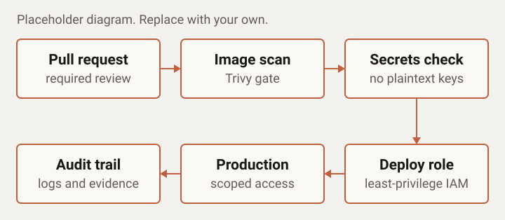

Case study
DevSecOps Hardening
Context
A SaaS client on AWS whose access rules and pipelines had been set up for speed early on and had not been revisited as the company grew.
Problem
IAM permissions were broader than anyone needed, container images shipped without being scanned, and pipelines had few controls over what could reach production. There was also little evidence to show an auditor or customer that controls were in place.
What I did
- Audited IAM users, roles, and policies, then replaced broad permissions with least-privilege roles.
- Added container image scanning with Trivy to the build pipeline.
- Moved secrets out of code and pipeline configuration into a managed secrets store.
- Added pipeline gates: required reviews, and blocked deployments when a scan finds a high-severity issue.
- Set up audit-ready controls: logged access and changes, with a documented record of who can do what.
- Wrote a short runbook so the team could keep the controls in place after handover.
Architecture

Result
Security exposure went down, and deployments became safer because risky changes were stopped before reaching production.
- Overly broad IAM policies and users removed: 15 to 20.
- Images scanned before deployment: all of them.
- New vulnerabilities flagged as soon as a new image version was built, before it shipped.
Stack used
- AWS IAM
- Trivy
- Secrets management
- CI/CD pipeline gates
- Audit logging